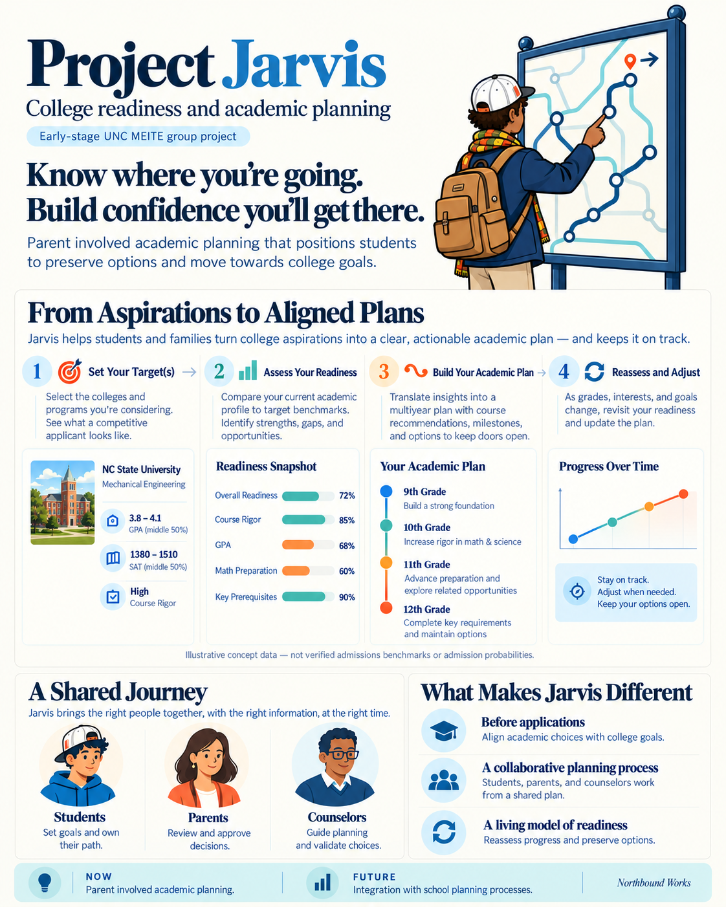

UNC MEITE · Early-stage group project
Project Jarvis
Know where you’re going. Build confidence you’ll get there.

From aspirations to aligned plans
Project Jarvis explores how students and families can turn college aspirations into an actionable academic plan, preserve options, and revisit decisions as goals and circumstances change.
Set your targets
Explore colleges and programs you’re considering and the preparation they may require.
Assess your readiness
Identify academic strengths, gaps, and opportunities in relation to those goals.
Build your academic plan
Connect course choices, milestones, and experiences to the options you want to keep open.
Reassess and adjust
Revisit the plan as grades, interests, and goals change.
A shared planning process
Students set goals and own their path. Parents review and support decisions. Counselors guide planning and help validate choices.
This is an early-stage concept. Figures in the overview are illustrative, not verified admissions benchmarks or admission probabilities.